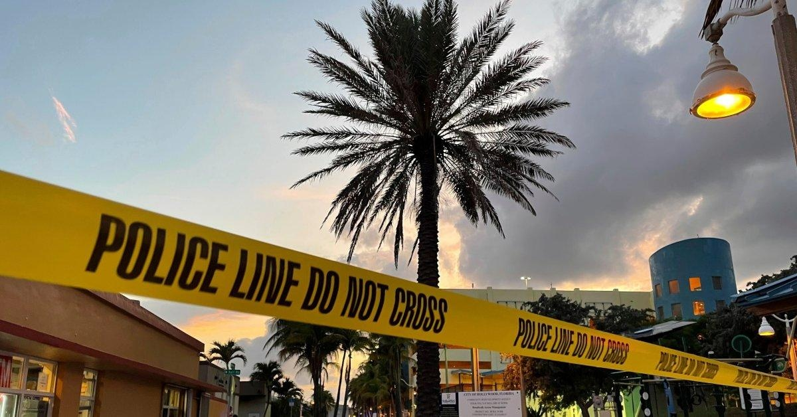

Multiple Injured in Shooting in Hollywood, FloridaHOLLYWOOD, Fla. — Nine people were injured Monday evening when gunfire erupted along a beach boardwalk in Hollywood, Florida, sending people frantically running for cover along the crowded beach on Memorial Day. Several of the victims were taken to a children’s hospital, police spokesperson Deanna Bettineschi said. However, authorities have not yet released the ages of the victims. The nine victims included six adults and three children, according to Yanet Obarrio Sanchez, a spokesperson for Memorial Healthcare System. All of the victims were in stable condition, she said. Read More: The Long-Term Mental Health Needs of Young School Shooting Survivors A preliminary investigation shows that an altercation between two groups resulted in gunfire, police said. One person has been detained and another suspect is being still being sought. The shooting happened about 6:30 p.m. on the broadwalk near a convenience store, a Ben & Jerry’s ice cream store and a Subway sandwich shop. Alvie Carlton Scott III said he was on the beach when all of a sudden he heard numerous gunshots go off. He said he hid behind a tree and then fled the area after a police officer told people to run. Jamie Ward, who was also on the broadwalk, said several young men were fighting in front of the stores when one pulled a gun and started shooting. Videos posted on Twitter on Monday evening showed emergency medical crews responding and providing aid to multiple injured people. Read More: These Countries Restricted Assault Weapons After Just One Mass Shooting Police said there would be a heavy presence of officers as the investigation continues. Officials were also setting up an area for family members to reunite. “Thank you to the good samaritans, paramedics, police and emergency room doctors and nurses for their immediate response to aid the victims of today’s shooting,” Hollywood Mayor Josh Levy said in a statement. Hollywood Beach is a popular beach destination about 11 miles (17 kilometers) south of Fort Lauderdale and 20 miles (32 kilometers) north of Miami. The beach was expected to see more visitors than usual with the Memorial Day holiday. - Here's What's in the Debt Ceiling Deal - How Worried Should the World Be of China's New COVID Wave? - Succession Was a Race to the Bottom, And Everybody Won - What Erdoğan’s Victory Means for Turkey—and the World - The Ancient Roots of Psychotherapy - How Drag Culture Inspired Ursula - Drought Crisis Spurs U.S.-Mexico Collaboration - Florence Pugh Might Just Save the Movie Star From Extinction |
 |